name: inverse layout: true class: center, middle, inverse --- #Publicity and the Delegitimation of Lynching Michael Weaver The University of British Columbia October 17, 2018 --- -- ##Societies accept or tolerate some forms of violence while rejecting others. --- ###Domestic violence ###Dueling ###Police use of force -- ##How does violence become publicly unacceptable? --- ##Lynching in the United States --- template:inverse ###Rebecca Felton, suffragette: --- layout:false class: left, middle > "**I led the mob** which lynched Nelse Patton and **I'm proud of it**. I directed every movement of the mob. **I wanted him lynched**. I saw his body dangling from a tree this morning, and I am glad of it. **I aroused the mob and directed them to storm the jail**. I had my revolver but did not use it. I gave it to a deputy sheriff and **told him to shoot** Patton and shoot to kill." >> ### William V. Sullivan, former United States Senator, Mississippi --- template:inverse ### South Carolina Governor Coleman Blease: 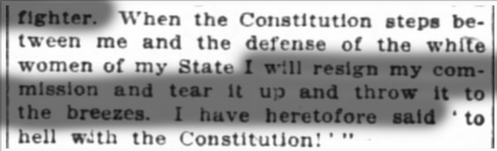 --- template:inverse <img src="./clippings/lynching-headline.png" width="90%" </img> --- template:inverse --- template:inverse <img src="./clippings/lynching_innocent.png" width="90%" </img> --- template:inverse <img src="./clippings/sheriff_fails_to_act.png" width="90%" </img> *New York Age* 1/17/1931 --- template:inverse <img src="./clippings/house_condemns_lynching.png" width="50%" </img> *The Chillicothe Constitution-Tribune* 1/15/1931 --- template:inverse ## How did this transformation take place? --- .left-column[ ##Outline ] .right-column[ ### Publicity ### Lynching ### Historical "Big Data" ### Results ] --- template:inverse ##The argument --- .left-column[ ##Argument ### Violence ] .right-column[ ### Most Violence is "Moral" - (Black 1983, Fiske and Rai 2014) ### Which violence gets to be "legitimate" in a context/locally? ] --- .left-column[ ##Argument ### Violence ] .right-column[ ### Which violence is legitimated (locally)? #### Motive Perpetrators/Victim/Audience #### Opportunity Who has means to frame? - diagnostic/ prognostic framing Who has means to deny framing to others? What are the costs of framing? ] --- .left-column[ ##Argument ### Violence ] .right-column[ ### When perpetrators are powerful #### 1. Violence is publicly legitimated #### 2. Difficult to challenge because of reputational costs, risk of coercion #### 3. May be self-reinforcing dynamic - Determine both "facts" and norms ### How can this dynamic be challenged? ] --- template:inverse ## Publicity Shocks --- .left-column[ ##Argument ### Violence ### Publicity ] .right-column[ ### Reach *Geographic scope of audience* When it expands: * New audiences not share local norms on violence .red.bold[*] * Critics not silenced ### Inclusivity *Inclusion of different voices in public debate* When it expands: * Victims and allies no longer silent .red.bold[*] * 'Facts' and justifications around violence contested * **Enabled** by *reach* .footnote[.red.bold[*] See, e.g. Keck and Sikkink 1998] ] --- .left-column[ ##Argument ### Violence ### Publicity ] .right-column[ ### Expanded publicity can #### *Challenge hegemonic local pro-violence discourse* ### and under [some conditions](#conditions): #### *Increase reputational costs to violence* #### *Lead to local efforts to stop violence* ] --- template:inverse ##Lynching and Publicity -- ### Local critics silenced, but... --- .left-column[ ##Argument ###Definitions ###Publicity ###Lynching] .right-column[ ###1. Increase in publicity * Technology + Economic/Political Integration `\(\rightarrow\)` greater reach * Reach + activists `\(\rightarrow\)` inclusion of black voices ] --- template:inverse <img src="./clippings/ida_wells_speech_1.png" width="60%" </img> --- template:inverse <img src="./clippings/ida_wells_speech_2.png" width="60%" </img> "The negroes must have detectives who can go and find out the facts about each lynching and publish them side by side with the versions printed in the Southern newspapers" --- .left-column[##Argument ###Definitions ###Publicity ###Lynching] .right-column[ ###1. Increase in publicity * Technology + Economic/Political Integration `\(\rightarrow\)` greater reach * Reach + activists `\(\rightarrow\)` inclusion of black voices ###2. Publicity breeds criticism and scandal ] --- template:inverse 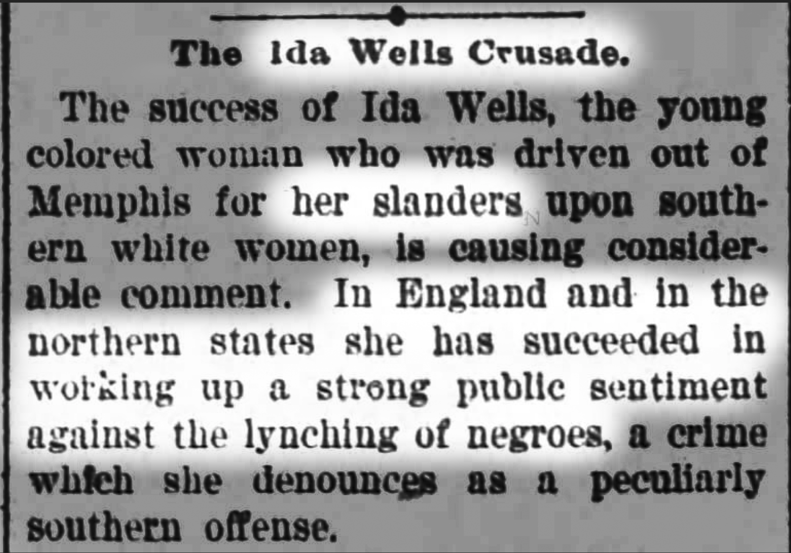 Threatened by Wells's publicity campaign --- class: left, middle > ##### "The Chattanooga News does not lift its voice in behalf of Sheriff Shipp, his deputies or any member of the mob that lynched Johnson. Its **voice is merely raised in behalf of this community.** It submits that even so high and mighty a person as the Attorney General of the United States **has not just cause to hold this community up in contempt of the world** and in effect **publish it abroad as lawless** and firmly set **against the enforcement of law.**" >> "An Official in Contempt of Chattanooga," *The Chattanooga News* --- .left-column[##Argument ###Definitions ###Publicity ###Lynching] .right-column[ ###1. Increase in publicity * Technology + Economic/Political Integration `\(\rightarrow\)` greater reach * Reach + activists `\(\rightarrow\)` inclusion of black voices ###2. Publicity breeds criticism and scandal ###3. Bad publicity turns Southern elites against lynching ] --- template:inverse "our lynching reputation ... is holding the state back in its development." --- .left-column[##Argument ###Definitions ###Publicity ###Lynching] .right-column[ ###1. Increase in publicity * Technology + Economic/Political Integration `\(\rightarrow\)` greater reach * Reach + activists `\(\rightarrow\)` inclusion of black voices ###2. Publicity breeds criticism and scandal ###3. Bad publicity turns Southern elites against lynching ###4. With opposition of local elites, lynching declines ] --- template:inverse --- template:inverse ## Testing the Argument --- .left-column[ ## Testing ### Reach ] .right-column[ ## In the late 19th century ### US saw massive expansion of... ] --- template:inverse ## Rail Networks <iframe width=100% height=500 frameborder='0' src='https://mdweaver.github.io/station_map' allowfullscreen webkitallowfullscreen mozallowfullscreen oallowfullscreen msallowfullscreen></iframe> --- template:inverse class: center, middle ## Telegraph 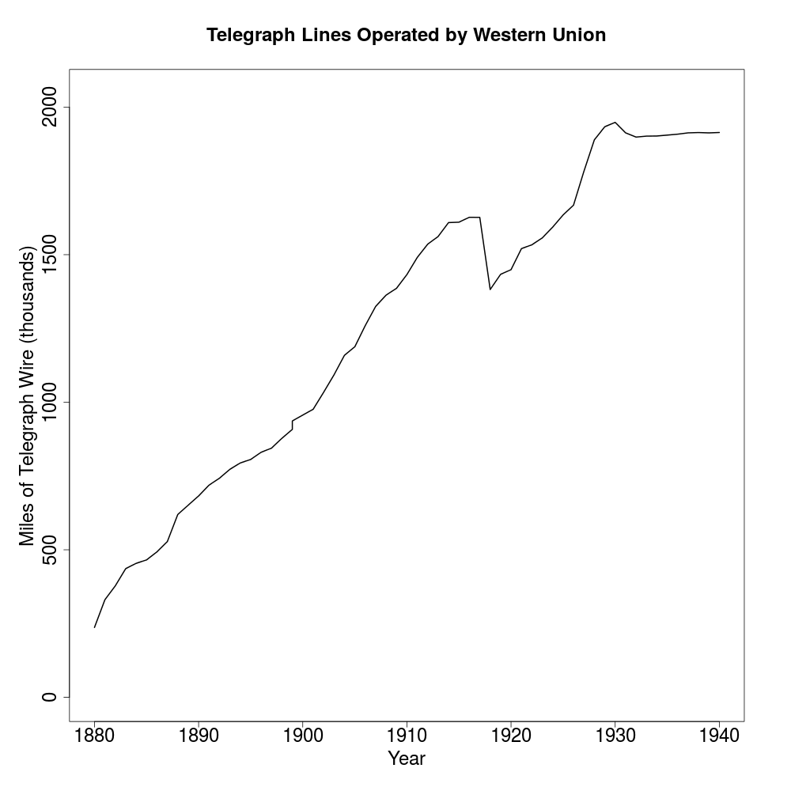 --- .left-column[ ## Testing ###Reach ] .right-column[ ### ... which made the country smaller - ##### reduced travel times for people and information - ##### created a public demand for national news ### Events could have *national* reach ] --- .left-column[ ## Testing ### Reach ] .right-column[ ### But, emergence of a national public sphere... - ##### many structural causes, highly endogenous - ##### monotonic growth ### Cannot use *national* variation ] --- .left-column[ ## Testing ### Reach ] .right-column[ ### ***Local* exposure** to publicity grew **uneven**ly ##### Differential access to communication technology ### `\(\xrightarrow{implies}\)` ##### Differential exposure to new publicity ### What are observable implications at **subnational** level? ] --- .left-column[ ## Testing ### Reach ] .right-column[ ### Four implications of the argument ##### Access determines reach ##### The **probability** that a **lynching is reported:** ##### (1) **increases** as travel times **decrease** between the lynching and the paper. ##### (2) **increases** when the lynching occurred in an area more **central in communication and transportation networks**. ] --- .left-column[ ## Testing ### Reach ] .right-column[ ### Four implications of the argument ##### Greater reach yields criticism, fewer lynchings. ##### **Coverage** of lynching is **more critical**: ##### (3) as the **distance** from the lynching to the newspaper **increases**. ##### Lynching **declines faster**: ##### (4) in places with **more exposure** to national public sphere ] --- template:inverse ##The data --- template:inverse ## "Reach" of Publicity --- template:inverse <iframe width='100%' height='600' frameborder='0' src='https://yale.cartodb.com/u/mdweaver/viz/ffd06ece-8545-11e4-a898-0e018d66dc29/embed_map' allowfullscreen webkitallowfullscreen mozallowfullscreen oallowfullscreen msallowfullscreen></iframe> --- name:newspaper_data .left-column[ ##Data ###Newspapers ] .right-column[ ###"Big data" meets history * Digital newspapers archives * More than 3,000 different papers * **National**, though **uneven** coverage * Big-city dailies, small town weeklies * 9 million+ issues between [1880 and 1940](#digitization_time) * Searchable content * 1.2 million articles mention "lynching" * Words/phrases for [lynching discourse](#discourse_measure) ] --- Digitized Newspaper Issues by State 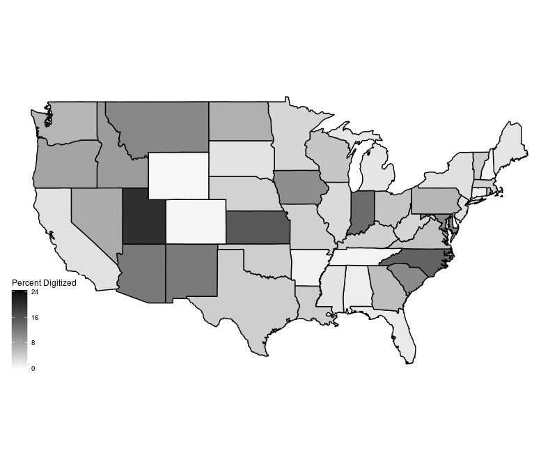 --- template:inverse ## Communication Networks --- class:center, middle <iframe width='100%' height='600' frameborder='0' src='https://mdweaver.github.io/times_year' allowfullscreen webkitallowfullscreen mozallowfullscreen oallowfullscreen msallowfullscreen></iframe> --- .left-column[ ##Data ###Newspapers ###Railroads ] .right-column[ ###Railroad networks Yearly data from 1880 and 1900 * Period of rapid growth (more than doubles) * Network centrality of counties * Travel time between counties * Proxy for telegraph network ] --- template:inverse ## Lynching Events --- .left-column[ ##Data ###Newspapers ###Railroads ###Lynchings ] .right-column[ ###Lynching events * 1880 to 1930s, ~ 4000 *reported* events * Sources: * Historians, Sociologists * NAACP * Chicago Tribune ] --- template:inverse ##Analysis --- .left-column[ ## Analysis ### Reach ] .right-column[ ### Four implications of the argument ##### Access determines reach ##### The **probability** that a **lynching is reported:** ##### ![check][] (1) **increases** as travel times **decrease** between the lynching and the paper. ##### ![check][] (2) **increases** when the lynching occurred in an area more **central in communication and transportation networks**. ] [check]:./check-mark-3-24.png --- .left-column[ ## Analysis ### Reach ] .right-column[ ### Observations * **all issues** appearing **within a week** of a lynching * **Issue - lynching dyads** * **Coverage**: lynching mentioned ### Design * **Panel analysis**, clustered errors * Year, publication, lynching county fixed effects * Publication-county, lynching-county covariates ] --- class: center, middle Probability of lynching coverage by railroad travel time (Residual) 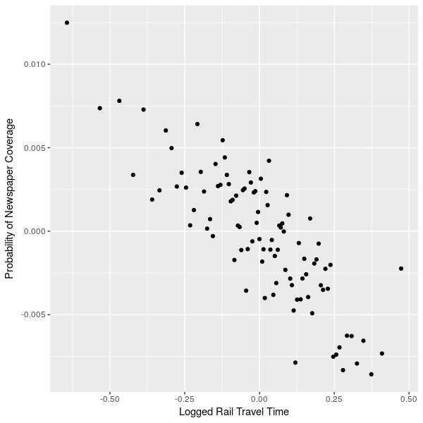 --- class: center, middle ### Effects of Betweenness Centrality on Pr(Mention) <img src="./figures/betweenness_dyads.png" width="100%" height="75%"</img> --- .left-column[ ## Analysis ### Reach ] .right-column[ ### Effects **not explained** by: * National trends in rail network *and* newspaper coverage (Year FE) * Some counties attract railroads *and* newspaper coverage (County FE/Covariates) * Endogenous placement of railroads ] --- .left-column[ ## Analysis ### Reach ### Criticism ] .right-column[ ### Four implications of the argument ##### Greater reach yields criticism, fewer lynchings. ##### **Coverage** of lynching is **more critical**: ##### ![check][] (3) as the **distance** from the lynching to the newspaper **increases**. ##### Lynching **declines faster**: ##### (4) in places with **more exposure** to national public sphere ] [check]:./check-mark-3-24.png --- .left-column[ ## Analysis ### Reach ### Criticism ] .right-column[ ### Observations * **lynching-issue dyads** *with coverage* within one-week window * **Criticism**: `$$AntiLynchingKeyWords - ProLynchingKeyWords$$` ### Design * **Fixed effects** for: * total matching keywords * unique lynching events * year ] --- class: center, middle ## Criticism of Lynching across Distance 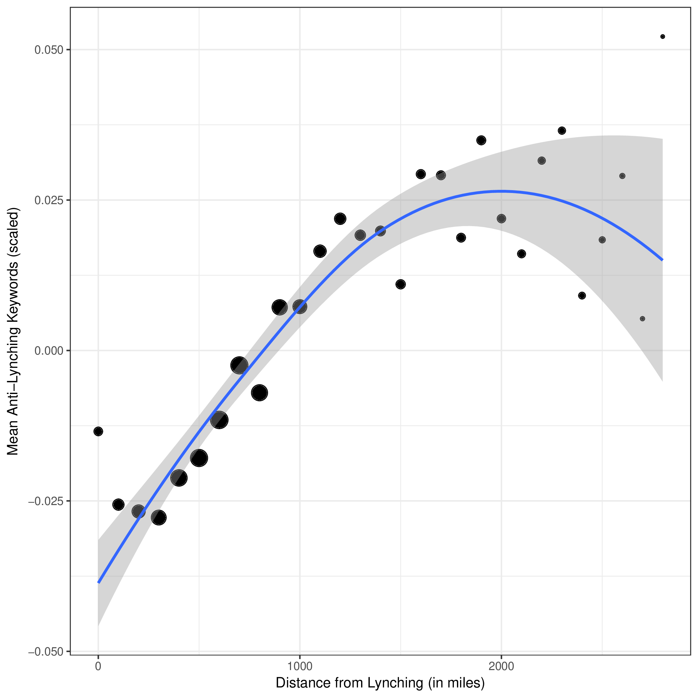 --- .left-column[ ## Analysis ### Reach ### Criticism ] .right-column[ ### Pattern **not expained by**: * Distant coverage using fewer overall words (Keyword FE) * Heinous lynchings being more newsworthy and worthy of criticism (Lynching Event FE) * Trends over time for more distant coverage *and* more criticism (Year FE) ] --- .left-column[ ## Analysis ### Reach ### Criticism ### Lynchings ] .right-column[ ### Four implications of the argument ##### Greater reach yields criticism, fewer lynchings. ##### **Coverage** of lynching is **more critical**: ##### ![check][] (3) as the **distance** from the lynching to the newspaper **increases**. ##### Lynching **declines faster**: ##### ![check][] (4) in places with **more exposure** to national public sphere ] [check]:./check-mark-3-24.png --- .left-column[ ## Analysis ### Reach ### Criticism ### Lynchings ] .right-column[ ### Observations * **county-year panel**: 3109 counties from 1880 to 1900 * **Lynching**: *any* lynchings in a county-year * **Exposure**: travel-time weighted "[access](#access)" to newspaper audiences ### Design * Year FE * County FE/Lagged Dependent Variable * Economic, demographic, and rail-construction covariates ] --- class: center, middle name: access_table ### [Access](#access) to daily newspaper circulation inhibits lynching <img src="./figures/circ_access.png" width="100%" height="75%"</img> --- .left-column[ ## Analysis ### Reach ### Criticism ### Lynchings ] .right-column[ ### Effect **not expained** by: * Trends toward fewer lynchings; more newspaper circulation (Year FE) * County propensity to have lynching (County FE) * Economic/demographic changes in counties (County Covariates) * Local railroad construction * "Access" to something other than media audiences (e.g., population) ] --- class: center, middle ### Exposure to media audiences, not population. 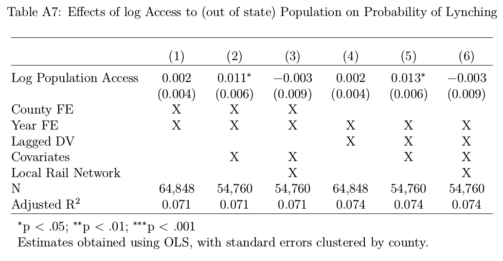 --- --- template:inverse ## What's next? --- .left-column[ ##Conclusion ###To Do: ] .right-column[ ###Did **activists** change the frame? ###Did external **criticism** stop lynching? ###Can changes in publicity **legitimize** violence? ] --- template:inverse class: center, middle <img src="./figures/birth_of_a_nation.jpg" width="50%" height="75%"</img> --- template:inverse ## Scope --- .left-column[ ##Conclusion ###To Do: ###Scope ] .right-column[ ### Dimensions of Violence <br> ||**State Violence**|**Non-state Violence**| |:-|:-:|:-:| |**Legitimation**<br>|Refugee/Immigrant Detention,<br>Nazi ethnic cleansing|'Stand Your Ground' Laws| |**De-legitimation**<br>|Death penalty|**Lynching**,<br>Widow burning| ] --- .left-column[ ##Conclusion ###Scope ] .right-column[ ### Where does this argument travel? ##### **Cases in which:** ##### 1. *Violence relatively "local"* ##### 2. *Power disparity is large* ##### 3. *Perpetrators value their reputation* - Who are "peers"? - Economic/trade relations - Shared jurisdictions ] --- .left-column[ ##Conclusion ### To Do: ### Scope ] .right-column[ ### Does publicity *constrain state violence* ? Unclear at this point, but mechanisms ### Help understand *Legitimation of state violence* ] --- .left-column[ ##Conclusion ###Scope ###Legacy ] .right-column[ ### Legacy of Anti-Lynching Movement Publicity effective, but should not be overly sanguine ] --- template:inverse -- ### Du Bois: "The police is the mob. The courts are the lynchers." --- template:inverse #Thank you --- --- template:inverse #Extra slides --- title: extras #### Analysis - [model specification](#equations) - [coverage (not dyads)](#aggregate_result) - [effects over distance](#distance_result) - [access](#access) - [limits](#limits) #### Data - [coverage validation (window)](#coverage_window) - [coverage validation (accuracy)](#coverage_accuracy) - [discourse measures](#keywords) - [discourse extensions](#text_extension) - - [railroad extensions](#railroad_extension) #### Background - [lynching discourses](#lynching_discourse) - [newspaper partisanship](#partisanship) --- .left-column[ ##Argument ### Violence ### Publicity ] .right-column[ ### Under some conditions... 1. **News of violence reaches new audience** 2. **New audience is interested** 3. **New audience is critical/persuaded by victims** 4. **News of criticism reaches locality** 5. Locals value relationship/reputation with audience ### ... increasing publicity can 1. **Challenge local hegemony of pro-violence discourses** ] --- .left-column[ ##Argument ### Violence ### Publicity ] .right-column[ ### Under some conditions... 1. **News of violence reaches new audience** 2. **New audience is interested** 3. **New audience is critical/persuaded by victims** 4. **News of criticism reaches locality** 5. **Locals value relationship/reputation with audience** ### ... increasing publicity can 1. Challenge local hegemony of pro-violence discourses 2. **Increase reputational costs to endorse or tacitly approve violence** ] --- .left-column[ ##Argument ### Violence ### Publicity ] .right-column[ ### Under some conditions... 1. **News of violence reaches new audience** 2. **New audience is interested** 3. **New audience is critical/persuaded by victims** 4. **News of criticism reaches locality** 5. **Locals value relationship/reputation with audience** ### ... increasing publicity can 1. Challenge local hegemony of pro-violence discourses 2. Increase reputational costs to endorse or tacitly approve violence 3. **Increase costs of permitting violence to occur** ] --- .left-column[ ##Argument ### Violence ### Publicity ] .right-column[ ### How do changes in publicity occur? #### Social, economic, political transformations - Affect interest in distant events - Changes in kinds of information produced #### Technological change - **produce** conditions for greater reach or inclusivity - shapes **exposure** to otherwise expanding publicity ] --- name:limits .left-column[ ## Analysis ### Limits [extras](#extras) ] .right-column[ ###Railroads Endogenous? * but network attributes not locally determined * conditioned on local railroad construction ###Alternative interpretations * Importance, not information * Condition on population, economic output * Access to circulation, not to population * Reduced or hidden lynchings? * "Supply" or "demand"? ###Text * Broad but limited depth * Keywords are drastic simplification * Validation: manual coding, full text ] --- name:equations ##Equations ### Coverage Model `$$\begin{equation}\label{eq:coverage_dyads} \begin{split} Y_{ijt} =& \alpha_{year} + \alpha_{county-i} + \alpha_{j} + \boldsymbol{\delta}\mathbf{Centrality_{it}} + \\ &\boldsymbol{\beta}\mathbf{Distance_{ijt}} + \boldsymbol{\gamma}\mathbf{X_{it}} + \boldsymbol{\lambda}\mathbf{W_{jt}} + \\ &\varepsilon_{county_i} + \varepsilon_{county_j} \end{split} \end{equation}$$` ### Lynching model `$$\begin{equation}\label{eq:lynching} \begin{split} Lynchings_{it} = \alpha_i + \alpha_t + \beta_1 Access_{it} + \mathbf{X_{it}\beta} + \varepsilon_{county_i} \end{split} \end{equation}$$` [extras](#extras) --- name:access ### Media Access Media access in **county** `\(i\)` is the average of: * `\(NewspaperCirculation_j\)` (total circulation of daily newspapers in a county `\(j\)`) * for **all other counties** `\(j\)`; `\(i \neq j\)`; * Weighted by the inverse of `\(\tau_{ij}\)` (railroad travel time between `\(i\)` and `\(j\)`) `$$MediaAccess_i = \sum\limits_{i \neq j}^{j} NewspaperCirculation_j * \tau_{ij}^{-1}$$` [extras](#extras) [return](#access_table) --- name: aggregate_result Centrality Results (aggregated to the event, fraction of papers) <img src="./figures/betweenness_events.png" width="100%" height="75%"</img> [extras](#extras) --- class: center, middle name: coverage_over_distance Probability of lynching mention by distance 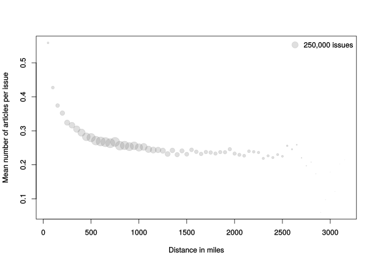 --- name: distance_result 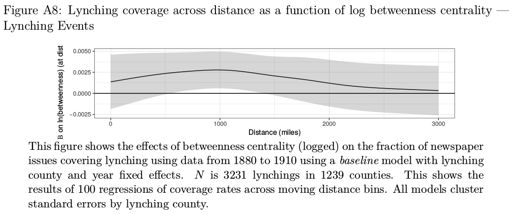 [extras](#extras) --- name: digitization_time Digitized Newspaper Issues by Year 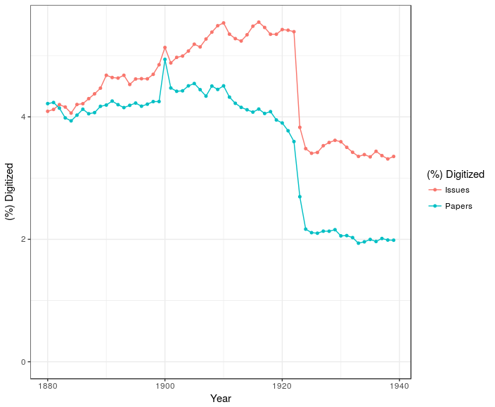 [back](#newspaper_data) --- name: partisanship Fraction of daily Republican papers Republican by region <img src="./figures/newspaper_partisanship.png" width="100%" height="75%"</img> [extras](#extras) --- Fraction of all papers Republican (south) <img src="./figures/southern_paper_gop.png" width="100%" height="75%"</img> [extras](#extras) --- name:coverage_window Fraction of event-related articles from time of event <img src="./figures/coverage_to_date.png" width="100%" height="75%"</img> [extras](#extras) --- TPR/PPV of article-event matching over time from event <img src="./figures/coverage_matching_ppvtpr.png" width="100%" height="75%"</img> [extras](#extras) --- name:keywords <img src="./figures/pro_lynching.png" width="100%" height="75%"</img> [extras](#extras) --- 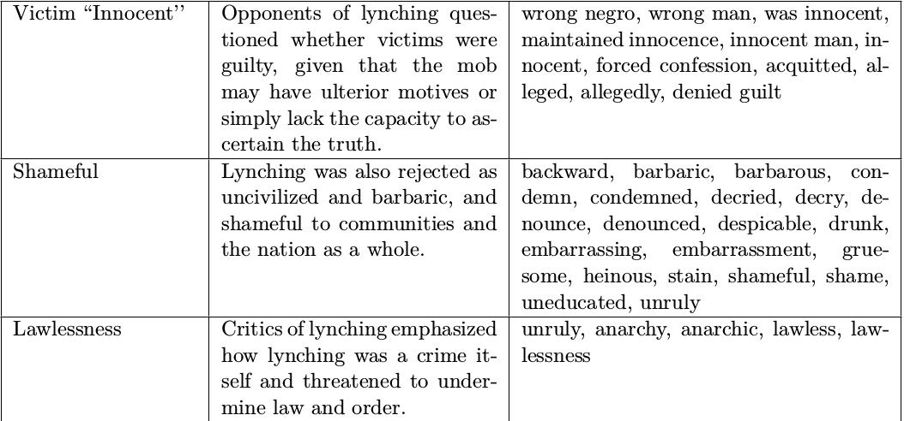 [extras](#extras) --- name:discourse_measure ### Discourse scaling `$$\begin{equation}\label{eq:discourse_scale} Discourse_j = \left( \frac{1}{n_d} \sum_{i=1}^{n_d} discourseWord_i \right) - \left( \frac{1}{n} \sum_{i=1}^{n} Word_i \right) \end{equation}$$` [extras](#extras) [back](#newspaper_data) --- name:railroad_extension .left-column[ ##Data ###Railroads [extras](#extras) ] .right-column[ ###Railroad networks * Railroad stations for each year between 1880 and 1910 * Scanned station lists for each year * Digitizing text, geocoding * Proximity to rail stations * Telegraph offices * Scanned lists * Digitizing text, geocoding ] --- class: center, middle <img src="./figures/official_guide.png" height="60%" width = "60%" </img> [extras](#extras) --- template:inverse <iframe width='100%' height='95%' frameborder='0' src='https://mdweaver.github.io/station_map' allowfullscreen webkitallowfullscreen mozallowfullscreen oallowfullscreen msallowfullscreen></iframe> [extras](#extras) --- name:text_extension .left-column[ ##Data ###Newspapers [extras](#extras) ] .right-column[ ###Which argument against lynching were effective? - Messy full text from ~85 million pages of news - RAs classified discourses about ~2000 articles on lynching - Look for spread and use of anti-lynching discourses across time and space ] --- name:lynching_discourse .left-column[ ## Background ###Lynching discourse [extras](#extras) ] .right-column[ ###Arguments in favor * Inefficiency/corruption of justice system * Popular sovereignty * Law does not deter criminals * Threat of black criminality/sexuality * 'Natural' response to rape ] --- .left-column[ ## Background ###Lynching discourse [extras](#extras) ] .right-column[ ###Justificatory Narratives * Protagonists * Sober, rational, all/leading citizens of town * Passive voice: no individuals did the lynching * Lynching was natural/unavoidable response * Antagonists * Black men dehumanized: "savages", "brutes", "beasts" * Assumed to be guilty * By default shown as sexually aggressive, criminals * Lynched *because* guilty ] --- .left-column[ ## Background ###Lynching discourse ###Antilynching discourse [extras](#extras) ] .right-column[ ###Arguments Refuted pro-lynching claims * e.g. rape alleged in minority of cases * Lynching a threat to law and order * Lynching part of a system of racial violence * e.g. Du Bois: "The police is the mob. The courts are the lynchers." ###Narratives Black voices counter white narratives about lynching * NAACP investigations * Ida Wells publications * Scottsboro Trials ] ---